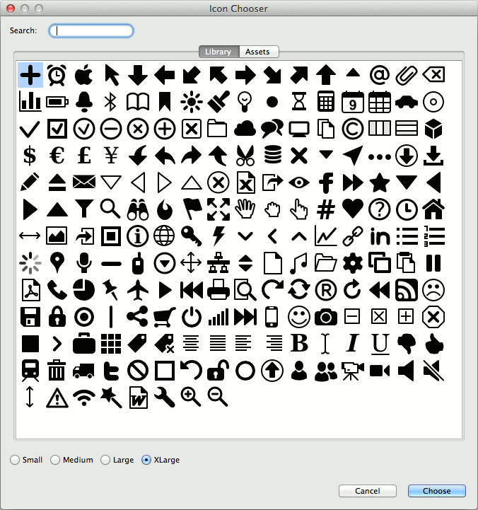

WireframeSketcher comes with 200 vector, monochrome icons that you can use in your wireframes and that are free to use in your own website or app. Icons work at any size, can be colored, rotated, and can be used everywhere.
Here’s a list of widgets that let you use icons: Icon, Label, Button, Shape, Menu. Additionally there is a wiki syntax that lets you embed icons in any text. Some widgets will let you also change the icon’s color.
To explore available icons just use the Icon property in Properties View to open the Icon Chooser dialog:

The icon library can be extended with custom icons. Mockups Gallery provides several icon packs that can be used to extend your icon selection. If those are not enough then explore other websites like The Noun Project that provide free and non-free icons in SVG format.
To add your own custom icon in SVG format follow these steps:
Custom icons can be shared between projects using project references.
Next: Working with Annotations